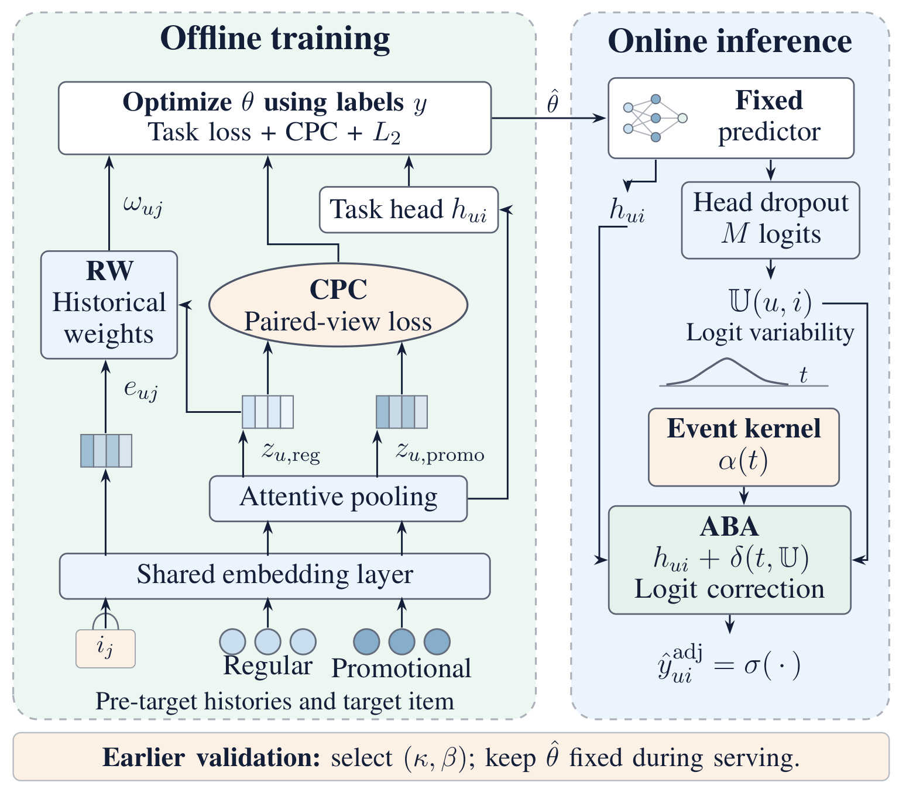
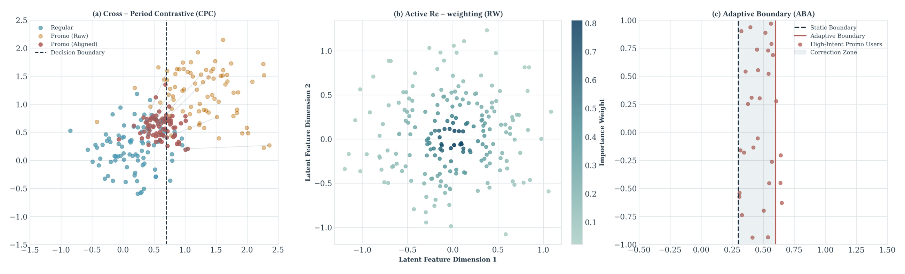
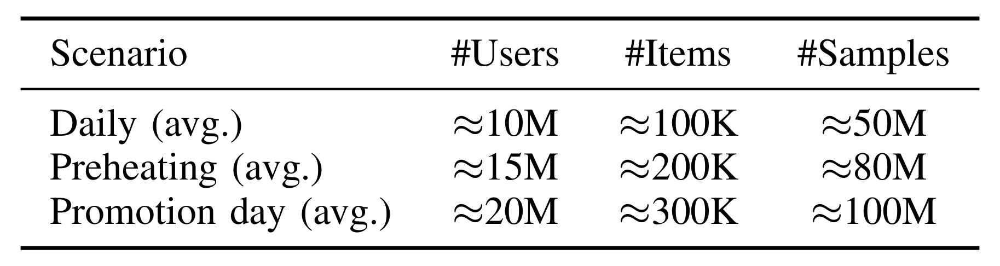
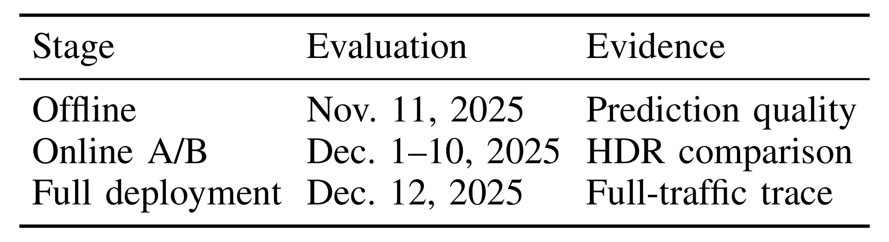
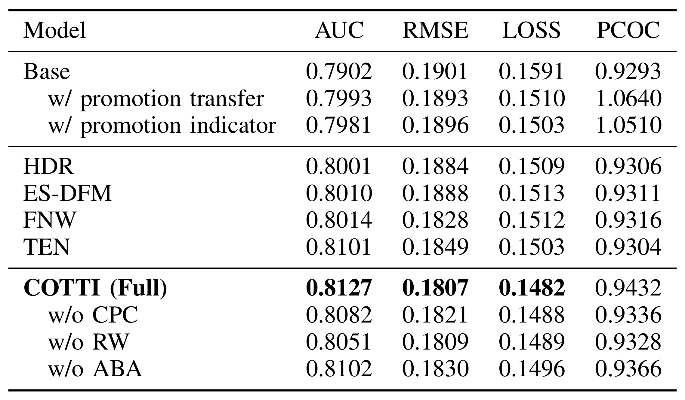
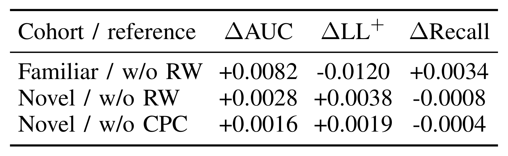
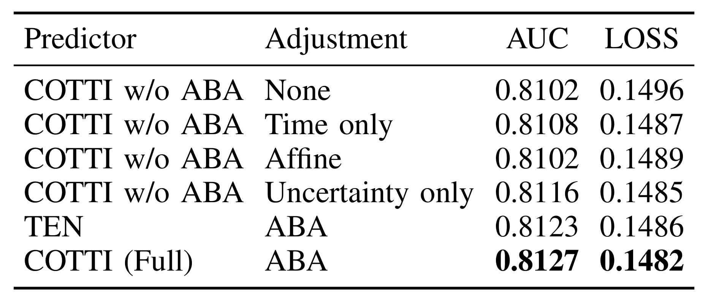
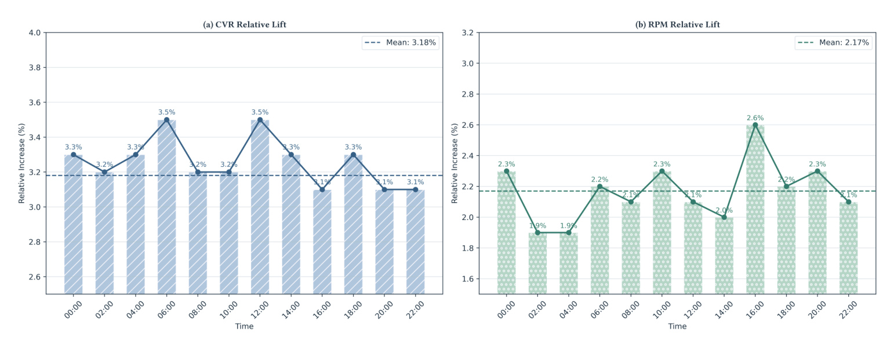
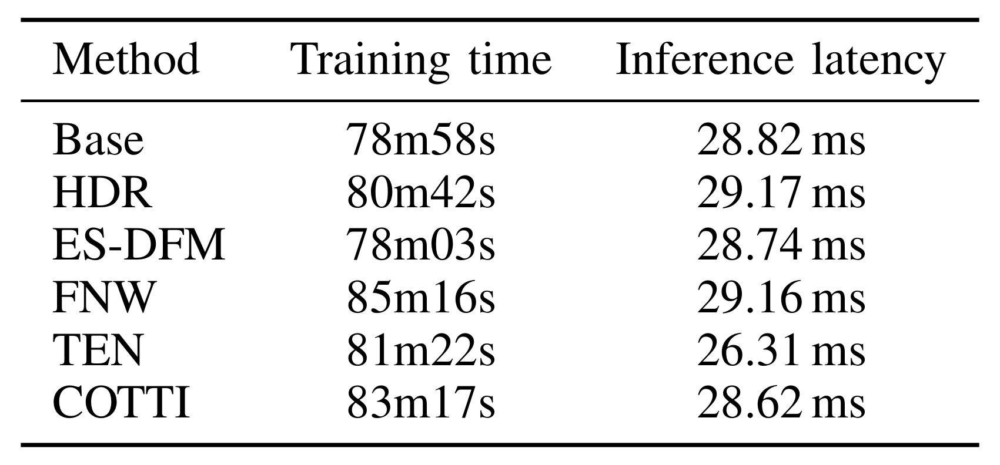
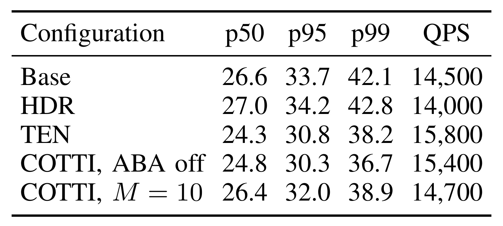

COTTI：大促转化预估中的历史兴趣、活动校准与新类别发现
Maolei Huang、Jing Tian、Dexuan Duan、Fangfang Lin、Huawei Cao 和 Shuhan Song 用飞猪推荐日志研究促销高峰中的转化率预估。第一作者来自阿里巴巴集团，合作机构包括中国科学院大学和圣克拉拉大学。预印本 v1 于北京时间 2026 年 11 月 17 日 19:18 首次提交。核查了论文入口、原稿及题名检索结果，未核验到论文专属公开代码或项目页。arXiv:2611.22597v1
促销改变折扣、流量来源和购买时机，基于日常流量更新的模型可能赶不上短促高峰。平时的兴趣能给活动期预测提供参照，但过强的一致性约束也会压低真实的新兴趣，例如平时订经济舱的用户在促销中购买高端酒店套餐。
1. 背景和问题
飞猪面对的是有明确活动日历的旅行商品推荐。一个排序服务在某个请求时刻看到用户画像、候选行程和可用行为历史，再给候选打购买概率分。活动开始以后，首先进入服务的是经过促销入口、主题会场或不同折扣吸引而来的流量，其商品供给和会话构成也可能变化。即使预测器看到了与平时近似的用户和商品特征，用户在活动日期是否愿意付款、愿意多快付款，仍可能不同。论文把这两类变化都纳入促销漂移，分别涉及特征分布和给定特征后的转化关系。活动强度还会随小时变化，同一个每天更新的模型不一定来得及吸收会场突然涌入的反馈。
日常历史能提供参照，但不同信号的用途有差别。一个用户持续购买某类机票，说明稳定需求可能值得保留。活动中偶尔点击距离这一兴趣很远的商品，可能只是看折扣，也可能代表预算释放后出现的真实购买意图。两种行为在与历史兴趣的距离上可以相似，训练器需要用支付标签约束预测，无法凭相似度为其中一个样本盖上噪声标签。这个区别贯穿全文，因为作者既希望利用较常见的历史一致性，又专门报告新类别已支付候选的排序情况，用来观察先验过强时会遗漏什么。
从时间上看，历史视图、监督标签和活动强度分别对应不同的信息边界。历史视图按目标时间切分，只有目标之前已经发生的行为可进入表征。之后发生的支付可以作为训练或离线评估标签，前提是有定义清楚的归因与成熟窗口。活动日历可在请求之前已知，当前活动实际流量峰值则可能只有事后才能确认。将事后峰值用于同一活动的回测会给时间核提供上线时本来拿不到的信息。作者因此用公布的日程确定核中心，用以往活动的峰期信息给出核宽依据，并把系数选择放在更早的验证数据上。至于具体转化标签何时算成熟，原文仍有披露缺口。
论文把促销适配与延迟反馈放在同一组比较里，读表时需要理解它们各自纠正哪里。近期点击迟迟未见支付，可能是观测窗口还未覆盖真正的转化，延迟反馈方案主要处理这种标签观察偏差。促销适配面对的问题还包括，即便所有支付都等到窗口成熟，活动人群与日常人群也可能有不同购买率。ES-DFM 与 FNW 可以作为标签时序处理路径的参照，它们的表现无法单独回答事件日历对打分是否有价值。线上 CVR 究竟以哪些流量作分母、退款如何计入，也需要独立于模型校准讨论，免得把计量差异当成学习机制。
针对历史知识复用，HDR 检索历史促销样本，经分布修正和 TransBlock 适配当前活动。TEN 用 BridgeNet 对齐跨时段表征，再由门控融合对促销敏感的专家，采用两阶段训练。前者也是本文线上实际替换的策略，后者是重要的离线对照。两者都说明复用历史并非本文首创。COTTI 的具体选择是将处理位置分成三个粒度。同一用户的两个历史视图决定表征应保留多少共同信息，单个活动训练样本与历史参考的距离决定其监督梯度占比，请求时刻和当前候选的预测扰动共同决定给基础分加多少。这个划分允许在固定预测器情况下换掉最后一项，也允许在训练阶段单独移除前两项再检测分群变化。
三处干预的分离还有一个直接的评估含义。全局 AUC 统计的是评估样本中正负例的排序关系，可以受跨时段和跨请求的分数变化影响。一个用户能否在有限个候选位置里看到刚开始感兴趣的品类，则取决于同一请求内的竞争和截断。线上 CVR 或 RPM 又包含候选曝光、用户行为以及实验期间供给和活动策略的共同作用。即使这三层指标都围绕转化，也需要分别核对各自的分母、对照和时间窗口。旅游促销中尤其可能同时发生大量熟悉品类获益和少量新类别候选掉出前列，单个聚合数字无法给出后一群体的结果。
以主任务中的历史先验为例，如果模型把两段行为嵌入拉得更接近，训练可以更充分使用常态行为。可是视图是否相近还取决于历史长度、类别覆盖、向量尺度和活动季节。两个表示不同只能说明模型看见了差异，无法定位哪条促销点击来自临时浏览、哪条反映真实购买。样本级权重也面临同样的识别问题，而且会施加在已经有支付标签的样本上。因此设计问题不仅是总量指标能否提高，也在于提升的一部分是否来自把学习能力集中到常见方向，并伴随对新类别正例的支持减弱。论文在消融后检查这一点，证据集中在日志候选和两类定义出的队列。
推理阶段则面对另一种风险。头部在随机遮蔽下产生的 logit 变动，可以帮助区分哪些候选对该头部扰动更敏感。仅凭方差没有方向性信息，不能由此判断是高估还是低估。如果活动开始时系统整体偏低，统一加分能改善一部分概率误差，但对同一请求的候选施加相同偏置会保留相对顺序。要改变同请求的小边际排序，需要候选之间得到不同偏置，随后还应检查变化是否发生在业务关注的正例和排序截断附近。COTTI 把只朝上修正的方向当成待验证假设，具体增量通过同预测器校准对照来量化。
在工业推荐中，这一问题与序列表征、线上校准和端到端服务成本直接相连。活动时追加十次随机头部预测，额外计算要在与特征读取和排序链路共有的时延预算里承担。相较于重训式适配，固定基础参数确实给了独立开关的接口，但开关有业务和系统两面的代价。论文语境里的鲁棒性限于评估过的促销场景。对于缺常态历史、活动形态变化或模型已经高估的请求，更需要检查方法的输入条件和方向假设，当前论文只提供了可检查的机制与部分观测。
2. 方法
2.1 任务定义与跨周期对比

Figure 1 从左下方的常态历史、促销历史和目标商品起步。两段历史经过共享编码和注意力汇聚得到同一用户的两种表示，目标商品同时进入相容的表示空间。图中历史向量并行流向对比损失和历史距离权重，促销向量为对比学习提供同用户的另一视图，商品向量与常态参考配合调节促销标签的损失。任务头仍从训练样本的用户、物品和上下文计算基础分，真实转化监督和两类训练信号一起更新模型。中间传往右侧的是训练好的预测器参数。右图从固定预测器取确定性分数，并用共享编码的输出运行随机头部，把多个随机分数压成同一候选的方差。下方较早验证给出强度和灵敏度，活动时间核把当前时刻映成修正上限，两者在加法处汇合，最后经逻辑函数得到调整后的概率。这条线上路径保留基础分，随机分数的均值仅服务方差估计。图中线条表达机制与时序，原文没有由这张结构图指定任务头的完整融合细节。阅读左栏时可以沿两类箭头分别追踪训练标签与请求特征。目标商品既可出现在历史距离支路，也在基础任务打分中使用，历史权重仅改变标签对应的训练损失，线上无需对候选再做批内距离标准化。右边携带的是已学习预测器，左边对比和监督的线没有直接接到校准器。图下方较早验证给出的两个系数，在同一事件配置中提供预先选好的控制量。遇到不完整历史，仍需补足训练配对资格与推理输入的缺失处理契约。两段历史的顺序也很重要，促销历史要按本次目标截断，再划入相应时段。
论文用目标之前的历史定义时刻表征，并以活动与常态的时间平均差作为描述量。促销目标风险与训练、校准分工见式（1）至（4）。同一个用户有多个商品目标时，截点应随目标移动。前一个目标之前的视图与下一个目标之前的视图可能不同。这个约定影响成对表征，也会改变同一商品相对常态参考的距离。形式化定义在两个阶段都约束能用到哪些信息。
符号解释：$S_u^{<t}$ 是用户 $u$ 在 $t$ 前的历史，$f_\theta$ 为编码器，$A$ 表示注意力汇聚，$T_{\mathrm{promo}}$ 和 $T_{\mathrm{reg}}$ 是两个时间集合。$\Delta$ 为均值表征的差，$P_{\mathrm{promo}}$ 为促销目标分布，$x,y$ 为特征和转化标签，$\ell$ 为二元交叉熵。$\sigma$ 把基础分 $h_\theta$ 与修正 $\delta_\phi$ 的和映为概率，$U_\theta$ 是随机预测波动。训练集 $D$ 从 $\theta_0$ 开始拟合，较早验证阶段只在搜索空间 $\Phi$ 中选校准参数 $\phi$。表征漂移量服务诊断，目标仍是促销人群上的转化预测。
式（5）至（8）把常态视图作为锚，以同一用户的活动视图为正例，其他入池用户的活动视图为负例，并用两视图分歧控制对比项强度。分母保留正例与负例竞争，权重直接作用于用户对比项。促销历史不全的请求既可能无法构造这组正例，也可能在任务模型上仍可评分，因此配对集合和固定预测器的服务人口应各自计量。训练流程并未要求对比样本涵盖所有用户。
符号解释：$r$ 表示时段，$S_{u,r}$ 是按同一目标前的截点筛选出的历史，$s$ 为余弦相似度，$\tau$ 为温度，$B_u$ 含当前用户和抽取的其他用户，$U_{\mathrm{pair}}$ 是拥有两段可配历史的用户集合。$d_z$ 为维数，$\bar z_u$ 为双视图均值，$v_u$ 为逐维总体方差的均值，$\eta_u$ 位于零到二分之一之间，二分之一可取。有共享兴趣的其他用户仍可能进入负例池。门值本身参与反向传播，乘积梯度还包含 $\ell_{\mathrm{cpc}}\nabla_\theta\eta_u$。优化可以通过缩小对比误差或压低其门值来降低目标，表示模长会影响门值。该对比项只用于训练，有配对资格不代表进入全部监督或服务人口的唯一条件。
2.2 历史距离重加权
RW 将目标商品与用户常态历史投到相容空间，用二者之间的平方距离改变促销样本对支付监督的贡献。式（9）至（11）在当前批次内重算距离统计，再把得到的权重送入正负标签共同使用的交叉熵。
符号解释：$j$ 为训练目标，$e_{uj}$ 是对应商品表示，$z_{u,\mathrm{reg}}$ 为该目标时间前的常态参考，$d_{uj}$ 为历史距离，$\mu_b,\sigma_b$ 为同批距离的均值和标准差，$\epsilon$ 用于数值稳定，$\gamma_{\mathrm{rw}}$ 控制权重对标准化距离的敏感性。$\mathcal U$ 为用户集合，$D_{u,\mathrm{promo}}$ 为用户促销目标集合，$\hat y_{uj}$ 为基础预测概率。$\operatorname{sg}$ 前向透传、梯度为零，因而本次反传只缩放样本监督梯度。历史更远的支付正例仍进入训练，也可能获得显著更小的梯度。缺常态参考的用户如何走 RW，论文没有给出可直接照搬的规则。
式（17）、（18）与第三节末的凸性推导分别说明理想最优概率与真实批权重的量级。固定特征后允许预测值独立变化，才可以把最优概率写成单点求解。真实网络由共享参数关联不同样本，同一目标换一批邻居也会得到不同的标准化距离。这两个性质分别约束理论解释和可复现的训练实现。
符号解释：$p(x)$ 是给定特征的真实转化概率，$q$ 是自由取值的预测，$w(x)$ 假定固定、严格为正且在给定 $x$ 后与标签无关，$r_x$ 为条件风险。前式在这一理想化条件下仍以 $q=p(x)$ 为最优。$a,b$ 为同一批里的两个样本，$n_b$ 是用于权重计算的批内样本数，$a_j$ 为标准化距离。实测配置的 $\gamma_{\mathrm{rw}}=1.5$ 时，相差两个标准化距离单位会给近样本约二十倍影响。指数权重直接使用，未做裁剪或均值归一化。零均值距离经凸变换后权重平均至少为一，所以重加权同时重排批内优先级和改变促销监督相对其他损失的总量，理想条件风险推导无法消除真实共享模型中的这种耦合。
2.3 固定预测器与活动时调整
ABA 在参数冻结后加在基础 logit 上。推理从同一个确定性编码结果分出一个关闭随机遮蔽的主预测和多个仅在任务头上采用 dropout 的样本。时间核另走活动日历输入，式（12）至（14）把方差与时间信号合并。
符号解释：$i$ 为候选，$h_{ui}^{(m)}$ 为第 $m$ 个随机头部的激活前分数，$M$ 是采样次数，$\bar h_{ui}$ 为随机均值，$U$ 为以 $M$ 作分母的方差，$h_{ui}$ 为另算的确定性 logit。$T_{\mathrm{peak}}$ 来自事先公布的活动日程，$s_{\mathrm{event}}$ 为时间核宽度，以历史活动流量最高的百分之二十小时作参考，具体宽度映射未给出。$\kappa\ge0$ 由验证搜索确定总体强度，$\beta>0$ 调节方差的响应速度。当前促销实际峰时未作为核中心。单侧分数修正适合检验原模型低估的场景，遇到高估的队列时无法将其拉回。
2.4 联合训练和上线顺序
式（15）、（16）在每个更新步将监督和正则合起来。训练使用基础预测的概率，完成后固定模型再调活动参数。这个顺序保留了离线训练中的历史先验，同时让上线打分可按活动配置启停。应用场景若只想比较训练结果，可以先统一关闭 ABA 观察基础概率。要归结活动时点带来的额外变化，则应保留同一基础模型和候选，仅改变校准路径，训练侧的其他组件仍使用已经确定的配置。
符号解释：$D_{u,\mathrm{reg}}$ 是常态目标集合，$L_{\mathrm{task}}$ 对常态样本使用普通监督，对促销样本使用当前批重算、反传时固定的系数，$\lambda_{\mathrm{cpc}}$ 和 $\lambda_2$ 分别给对比正则和参数缩减分配强度。推理仍需提供任务头依赖的表征与特征，用户对比配对和训练批权重不进入请求链路。缺历史参考应由额外回退契约解决，原文未描述自动漂移侦测或回退策略。
符号解释：$\delta$ 为 logit 加量，$h_i,h_j$ 是同一请求两候选的基础 logit，$\delta_i,\delta_j$ 为同一时刻各自的修正，$q_0$ 是零到一之间的固定接受阈值。概率界来自逻辑函数最大导数四分之一，赔率乘以 $\exp(\delta)$。同一请求内基础差超过时点上限的候选对保序，故排序变化集中在小边际区域。时点远离峰值时修正衰减，零强度或零方差时回到基础分。边界只约束改变幅度，产生的概率误差或分群排序影响仍须用数据验证。

Figure 2 左面板用蓝色日常点、浅色原始促销点和深色对齐后促销点表示视图之间的相对位置，虚线标出示意边界，点云用于说明跨期对比会鼓励共同表征。中间面板在两个潜在特征维度上排列散点，旁边的颜色条表示示意重要度，中心附近较深，远处较浅，对应以常态距离缩放促销监督的直觉。实际更新中的比例仍由当前批次和指数公式决定，图中颜色的范围不可当作实现中的最大权重。右面板标出静态和自适应边界，以及两者之间的修正区域，用来说明临界候选更容易在上线被移动。实际实现对候选使用随方差变化的非负 logit 偏置，示意区域的方向和位置不能直接换算成线上分数的偏移，也没有对应某个已报告的召回阈值。三个面板没有样本统计、事件显著性或排名变化频率，能读出的是三个动作各自作用在表征、训练梯度和服务打分的位置。式（19）的边际上界才给出可以用实际 logit 验证的保序条件。
3. 实验结果
3.1 数据规模、时间协议与指标
飞猪多月曝光与转化日志覆盖日常流量和 6.18、双十一、双十二活动。论文给出的流量量级便于判断设置面向的业务规模，复现仍需要另行确认样本定义和归因契约。

Table I 的行区分日常、预热和促销日，列分别统计用户、商品和样本。日常平均约一千万用户、十万商品和五千万样本，预热约一千五百万用户、二十万商品和八千万样本，促销日约两千万用户、三十万商品和一亿样本。用户和样本规模约为日常两倍，商品量级约三倍，说明活动改变的不只是流量总量，也可能改变候选覆盖。这里的行是场景平均和近似量级，论文未完整披露统计覆盖人群、平均周期和去重粒度。无法用三列直接算出可审核的每用户曝光数，也无法把这张表的样本量当成任何对照组的分母。作者列出的双十一离线测试超过一亿样本，是指定日期的评估规模，应该与这一场景概览独立理解。大规模日志还可以包含同一用户反复曝光，按行计数并不能提供独立观测数，更不说明各分群有足够数量的成熟正例。对长归因窗口的旅行成交，支付观察截止的影响还可能在活动高峰前后分布不均，表中没有给出可用来估计这部分影响的量。

Table II 把三个日期和证据口径放在一起。第一行是二零二五年十一月十一日的离线预测，读取的是超过一亿测试样本上的排序和误差指标。第二行是同年十二月一日至十日与飞猪当时服务策略 HDR 的在线对照，这里才有文中明确指派的对照模型。第三行是十二月十二日全量部署，给出当日走势。正文说十二月观察数据未参与十一月离线模型与校准参数选择，早期训练和验证的具体截点、基线各自的历史数据权限及活动适配预算披露不全。由此可以核对三个阶段没有使用同一日期和同一对照，仍缺少独立重建所有时间切片所需的日期和标签成熟信息。线上对照持续十天，也不能顺势把全量当日当作实验的后一日。若要了解促销中最值得做分桶的窗口，需要知道调参依赖哪几次早期活动以及日志切分如何跨过支付归因期限，表中仅给出评估节点。文中双十一测试对象是当日样本，双十二的业务表现需要按后面的对应窗口读。
离线 AUC 是日志评估标签下转化正例相对负例的判别，RMSE 与二元交叉熵对预测概率误差敏感，PCOC 以预测转化量之和除以实际观测转化量，目标为一。两批用户高估与低估可能在 PCOC 中抵消，也可能出现总量偏差改善但正例排序下降。线上 RPM 是每千次推荐曝光的归因收入，CVR 的确切分母、退款处理及归因时窗未完整公开。作者只报点估计，未提供置信区间、重复运行方差或显著性结论。数据规模无法转化为可信的区间，因为同一用户和活动时段的记录可相互关联。
3.2 主结果与单组件移除
实现用 TensorFlow，主干为四层、隐维 512 的 MLP，Adam 学习率为 $10^{-4}$，预热五千步，批大小为 2048，CPC 温度 0.07，RW 系数 1.5。ABA 的 $\beta$ 网格为 0.1、0.5、1.0、2.0，服务报告十次采样、头部 dropout 率 0.2。确选系数、停止规则、历史构造及各基线的完整调参预算均未详述。Base 是在日常流量增量更新的 ESMM 生产基础模型，另有历史活动迁移和加入促销指示两行。HDR、TEN 代表促销适配，ES-DFM、FNW 代表延迟反馈路径。消融依次去掉 CPC、将促销权重换成等权或关闭推理侧 ABA。

Table III 按行列出基础模型、已有方法和三个单组件移除，四列指标从判别、概率误差和聚合偏差观察同一批比较。完整 COTTI 的 AUC 为 0.8127，RMSE 为 0.1807，交叉熵为 0.1482，三列均优于表内其他配置。TEN 的 AUC 为 0.8101，差值为 0.0026，即零点二六个百分点。此处 TEN 才是无 ABA 对照，强一些的同校准对照在后表。完整 COTTI 的 PCOC 为 0.9432，以观测转化数为分母仍低估约百分之五点六八。仅加促销指示的行达到 1.0510，虽然 AUC 只有 0.7981，预测总量离观测总量反而更近。这也解释为何阅读表里的加粗项时，要先确定问题是正负例谁排在前面、逐样本概率误差大小，还是整批的转化量偏差。移除 CPC、RW、ABA 后 AUC 分别为 0.8082、0.8051、0.8102，完整配置与它们的逐项差值分别为 0.0045、0.0076、0.0025。去掉 RW 时损失升至 0.1489，而 RMSE 仅升到 0.1809，显示同一消融造成的变化在不同指标上量级各异。RW 在该组单独移除中产生最大 AUC 差值，这个对照的其他组件仍保留，且等权改变了训练中的损失总量，无法把差值全分配给距离优先级。缺少双组件联合移除与匹配的预算切片，逐项差值也不能相加为从 Base 到完整模型的解释。所列对照仍是作者实现下的系统级比较，基线历史访问方式和适配规则的不完备披露限制了结构归因。历史活动直接迁移和加指示变量的两行 PCOC 都高于一，表明不同适配策略在同一天甚至可以把总量偏差带向相反方向。结合 ABA 只能增加概率的公式，是否加修正须先看同一个基础预测器在该活动与切片中的偏差方向。表内也缺少固定预测器对全部方法统一施加同类校准的行，两种训练框架的差距应继续结合后续共享控制解读。
3.3 新类别发现与概率支持
候选类别若未出现在该用户曝光前历史中，被划入新类别，其他为熟悉类别。该定义基于已有观察，可受历史截断和类目层级影响。作者用已购正例上的平均负对数分数观测概率支持，并另用已购项进入候选前若干名的召回衡量截断结果。
符号解释：$P$ 为分群中的已购买正例集合，$|P|$ 为正例项数，$\hat y_j$ 为对应购买预测。已购项召回的评估对象也是观察到的购买项，依据入选前 $K$ 个候选的情况计数。论文未披露候选池构造、确切 $K$、队列样本与支付数量、类别层级、历史回看时长或成熟窗口。

Table IV 给的是完整模型减去行中指定移除版本的绝对差，每行的参考要单独读。熟悉类别相对无 RW 的 AUC 高 0.0082，正例损失低 0.0120，已购项召回高 0.0034。相同消融在新类别的 AUC 也高 0.0028，可是正例损失高 0.0038，召回低 0.0008，相当于低零点零八个百分点。新类别相对无 CPC 的方向一致，AUC 高 0.0016，正例损失高 0.0019，召回低 0.0004，即零点零四个百分点。三列观察对象不同，正负样本的总体相对顺序改善，已购项的分数和请求内靠前位置仍可能恶化。正例损失变高还可以主要由少数低分正例贡献，表里没有分位分布供进一步判断。在同一候选竞争中，少量原来正好在截断边界的已购商品降分，便可能使召回下降，而大量与其无关的负例重新排序可贡献判别增量。当前证据证明两种方向在被评价队列里并存，但无法给出活动场次间的稳定性，也无法把损失精确追溯到被重加权的哪些正例。正例有效权重占比、权重分布、配对区间和 CPC、RW 同时移除均未报告。日志中已购项召回衡量的是固定观察口径下的排序结果，原文没有用新发现带来的增量成交数据建立因果效应。更完整的复现会把历史长短、候选类别与位置共同分桶，核对减少的究竟是本来相近却未观察到的类别，还是与历史偏好相距很大的商品。新类别的定义本身受日志覆盖影响，它所标记的群体无法覆盖所有真实的新兴趣。读表还应保留差值基准，因为熟悉类别没有无 CPC 一行，表内熟悉与新类别唯一直接共享的消融参照来自 RW。如果复现方只能先补一项数字，已购正例总数及其按候选请求聚类的配对区间可以同时限定下降规模和读数稳定性。
3.4 相同验证预算下的校准对照
作者固定预测器，在同一离线测试、验证窗口和校准调参预算下比较四种分数调整。只有时间的方案给所有同刻候选共同偏置，仿射方案拟合斜率和截距，仅不确定性方案将事件核换成常数幅度。该协议控制的是训练后校准，预测器本身仍来自各自训练过程。

Table V 的前四行共享关闭 ABA 的 COTTI 预测器。原始 AUC 为 0.8102，交叉熵为 0.1496。仅时间控制将二者改为 0.8108 和 0.1487。共同的时点偏置对同一请求的候选保序，总样本 AUC 仍可能因不同时间的正负样本相对位置变化而提高。仿射控制的 AUC 保持 0.8102，交叉熵降到 0.1489，与作者所述的单调映射行为一致。仅不确定性控制得到 0.8116 和 0.1485，加上活动核的完整 COTTI 得到 0.8127 和 0.1482，比仅不确定性多 0.0011 AUC、少 0.0003 损失。把 ABA 加给 TEN，AUC 从主表的 0.8101 到 0.8123，交叉熵从 0.1503 到 0.1486。因而两个预测器都用 ABA 时，完整 COTTI 的剩余差距为 AUC 高 0.0004、损失低 0.0004。把时间修正当作可迁移的部署动作之后，整体领先显著收窄是数值现象，论文没有给出区间用来判断两个近邻分数的统计可辨性。校准后的损失变低支持比较其概率质量，却无法揭示过估人群是否因单侧修正恶化。按事件时点查看可靠性、按概率分箱比较观测转化、记录候选交叉和截断附近保留率，会分别回答该表在全样本层面无法回答的问题。这里尤其不能将 COTTI 相对无修正 TEN 的差距全部归给 CPC 与 RW。完整时间核与不确定性共同作用时，近峰请求还需有候选间的方差差异才可能发生内部重排。现有数据无法确定改善究竟出现在哪些请求。相同校准预算让后置分数函数可比较，论文仍缺多事件重复和区间，也未给出时间偏置控制的完整形式。要理解日历与方差的各自作用，还可用同请求保序和分箱概率误差观察是否改善了分配到真正候选上的预测。尤其应把跨时点的判别对与请求内的候选对分别统计，前者可以受共同时间偏置影响，后者才对应同请求重排。
3.5 线上 A/B 与全量描述曲线
二零二五年十二月一日至十日的对照使用实时流量中的 25%，线上 HDR 作对照，COTTI 为处理。作者报告加权平均相对提升 CVR 3.14%、RPM 2.68%。其中 25% 指实验所用流量占比，论文没有给出分臂比例及分母、随机化单位、并行策略影响、聚合权重、显著性或区间。CVR 的归因定义与表外比率无法独立重算，RPM 则是每千推荐曝光收入。TEN 与 TEN 加 ABA 均未作为线上对照。

Figure 3 横轴按两小时在当日从零点走到二十二点，两个面板纵轴是相对增加百分比。左侧 CVR 图上标出的时点约从百分之三点一到三点五，右侧 RPM 大致从百分之一点九到二点六。虚线标签分别显示百分之三点一八和二点一七的图中均值，它们属于全量部署的这张图，不能替换十天实验报告的加权相对提升。左图上午和中午的局部高点与右图下午的高点错开，说明这两个指标在描述轨迹中并不同步。两侧纵轴区间也不同，柱高的视觉差异不等于指标在同一个绝对基数上的改变。图没有披露参照人群或汇总规则，全量部署当天也没有文中可核验的并发对照，因此折扣、流量构成、库存或活动强度变化都可能进入时点曲线。两小时的柱与线共享图中的时点读数，虚线是图示均值，不能解释成实验区间、置信区间或独立的对照结果。该图最多用于描述全量当天观察到的波动，无法由此识别单个校准模块的业务效果。记录图中均值与十天实验点估计的差别，也能避免将两个来源拼成同一组上线收益数据。
3.6 训练计时与端到端服务
训练在阿里 MaxCompute 和 PAI 环境上运行，论文列出二十个参数服务器、二十个 worker 和六十四张 A100，未给每次运行的准确资源和停止条件。线上在实时预测系统内读取特征库、用户画像和候选行程，完整统计包括主要预测路径。两张效率表对应不同计时口径。

Table VI 左列是方法，中列是训练耗时，右列只有一个推理时延数。COTTI 对应八十三分十七秒和 28.62 毫秒，Base 对应七十八分五十八秒和 28.82 毫秒，TEN 对应八十一分二十二秒和 26.31 毫秒，后者在此表时延单值最低。COTTI 训练用时比 Base 长四分十九秒，比 TEN 长一分五十五秒，这只是表中墙钟时间的差，未知分配时不能换算成标准卡时。推理列也没有说明聚合统计或计时边界，读者无法把它指认为均值、中位数或尾部延迟，无法确认某项相近的单值是由于实际同路径成本相近还是口径覆盖不同。训练环境的机器总数提供部署背景，运行是否使用全部硬件、各模型是否达到一致收敛目标以及各用了多少训练样本均未确立。实际比较生产成本时，单值适合保留为作者给出的记录，并对照下一张表可确认的特征获取与随机头部执行范围。若将这里的单值同端到端分位做差，会把不同测量路径和不同聚合方式的差异混到一起，无法定位增加的是哪一段处理。此外，最短训练墙钟时间来自表中 ES-DFM，最短推理单值却来自 TEN，两个开销指标在这组配置里各有排序。在未给出统一训练预算和全量推理边界时，两列只能分别记录，尤其不宜用单值时延推断满足共同延迟约束时可达到的请求吞吐。对于后续压测，需记录推理计时是在取数之前还是之后、端内调用用的是确定性路径还是附带随机分支、以及单次记录如何汇总。能按模型阶段做同口径计时，才能判断这一列的差值是否能被后续端到端分布解释。在当前披露下，数值只可用于阅读表内排序。

Table VII 以配置为行，在匹配硬件、实例数、负载和候选规模下，报告端到端 p50、p95、p99 毫秒及共同延迟约束下的请求每秒数。完整 COTTI 开启十次随机头部时三项分位为 26.4、32.0、38.9 毫秒，吞吐为 14,700 请求每秒。关掉 ABA 的同模型为 24.8、30.3、36.7 毫秒和 15,400 请求每秒。开启后的三项分位差依次为 1.6、1.7、2.2 毫秒，吞吐减少 700 请求每秒，以关闭时 15,400 为分母约下降百分之四点五。完整 COTTI 相比 Base、HDR 的 p99 更低，吞吐更高。与不带 ABA 的 TEN 比，完整 COTTI 的 p99 多 0.7 毫秒，吞吐少 1,100 请求每秒，以 TEN 的 15,800 为分母约少百分之七。这个对照衡量部署配置，表里缺 TEN 加 ABA 的成本，无法比较两个系统使用同一种校准时的服务开销。分位差是两套端到端分布的分位点之差，不能直接解释成随机计算模块自身的分位。共同延迟约束的阈值、并发、预热、测量时长和重复次数也未明示，因此这组数据只支持报告条件下的一个工作点。耗时和吞吐同时变化与增加计算的方向相符，真实服务曲线还取决于并行、特征读取和资源竞争，不能只用多出的两点二毫秒外推不同规模的容量。表中关闭 ABA 的 COTTI 端到端尾分位比 TEN 低，开放随机采样后两者在尾部的次序发生变化，实际需要以最终配置比较。与此同时，TEN 的中位时延依旧更低，服务决策要考虑不止一个分位点。如果活动使用更大的候选池或不同实例规模，头部并行效率和实际调度条件都需要重新测量。比较吞吐时还须保持共同的延迟约束，否则处理进度与请求排队的差异会混入指标。记录相同约束下的成功请求数与候选规模分布，还可避免把超时或排队变化误解为单纯的头部算子提速。
完整随机路径与关闭随机调整的计算量近似为
符号解释：$C_{\mathrm{on}}$ 与 $C_{\mathrm{off}}$ 分别表示启用与关闭随机调整的计算量，$C_{\mathrm{enc}}$ 是一次确定性编码计算，$C_{\mathrm{head}}$ 是一次头部计算，额外 $M$ 次只估方差，最初的一次确定性头部仍产生主分数。这个近似没有计特征取数或调度，也不描述并行时的墙钟时间。原文的端到端统计明确把取数、主分与十次随机预测纳入，所以可以单独用于评估 ABA 的增量开销。
4. 总结
4.1 我的判断
COTTI 把用户历史如何影响拟合与模型何时需要线上加分落实到两个可独立检查的阶段。最值得保留的比较是固定预测器的校准对照，因为同一 ABA 给 TEN 带来的增量接近它给 COTTI 带来的增量，能把训练侧路线的判断放回合理的数值尺度。历史一致性也应从熟悉和新类别两边看，尤其当可见位置较少时，已购项召回下降与 AUC 提高可能同时发生。工程上，活动日程在开跑前可得，冻结预测器使分数修正可作为部署配置被单独观察。是否适合应用，取决于基础预测在活动窗口与关键分群中的偏差方向，以及小边际排序变化与额外随机采样能否同时满足目标。
4.2 局限
- 人群与标签口径。 常态和活动样本的计数范围、支付归因、标签成熟时间及各基线数据访问约束不足。短期流量的支付延迟会改变正负样本的组成，复现需要先匹配窗口与候选单位。文中训练和离线日志的规模无法填补线上 CVR 的明确分母。
- 训练与校准配置。 未给常态历史缺失时的 RW 回退、损失实际系数、完整负例构造和融合细节，也缺高峰区间到核宽的映射及选中振幅。分组和时间切分可据论文设计近似搭建，数值复现仍依赖作者未公布的细节。
- 分群效果和概率方向。 新类别缺样本数量、类别层级与截断位置，难知下降集中在哪群。头部随机波动只覆盖这条头部路径，基础模型高估时，非负修正会沿同方向继续推分。没有分箱可靠性或随活动时刻的残差对照来证明不同队列都获益。
- 线上与服务效应。 对 HDR 的线上提升缺流量分配、随机化、区间和汇总权重，分不清各模块贡献。全量轨迹依赖其未披露参照，TEN 加 ABA 无线上及服务对齐数据。吞吐只有一个采样点，暂时无法判断更低采样次数下性能与容量怎样变化。
4.3 复现时优先核对的三个问题
- 先锁定事件日历、曝光前历史、候选快照、时间切分与标签成熟，在同一成熟人群对照中记录每行独立用户、曝光、支付与缺历史覆盖率。这样可以判断新类别样本稀缺、标签尚未齐备或模型排序退化分别出现在哪一层。
- 在固定候选上成对比较 CPC、RW 单独与联合移除，并加一个批内均值归一化的 RW 诊断。它保留相对权重却改变总体权重尺度，同时读取近远距离分位、促销损失占比和新类别已购例有效权重份额，可帮助拆解监督总量变化与真实新发现被压低之间的关系。
- 在固定预测器和同一活动验证窗，用时间偏置、仅方差与完整 ABA 做同预算校准对照，逐时段并按预测分箱读偏差，同时记录重排、已购项召回和相同延迟约束下的吞吐。补上多个采样数及 TEN 加 ABA 的服务成本后，才有充分信息讨论额外计算应花在哪种修正上。应同时观察头部方差的重复采样稳定性，确认接近业务截断的重排是否会因随机种子而明显变动。